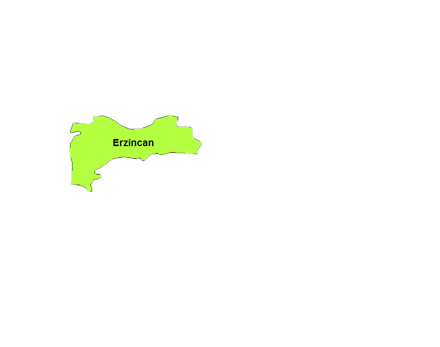
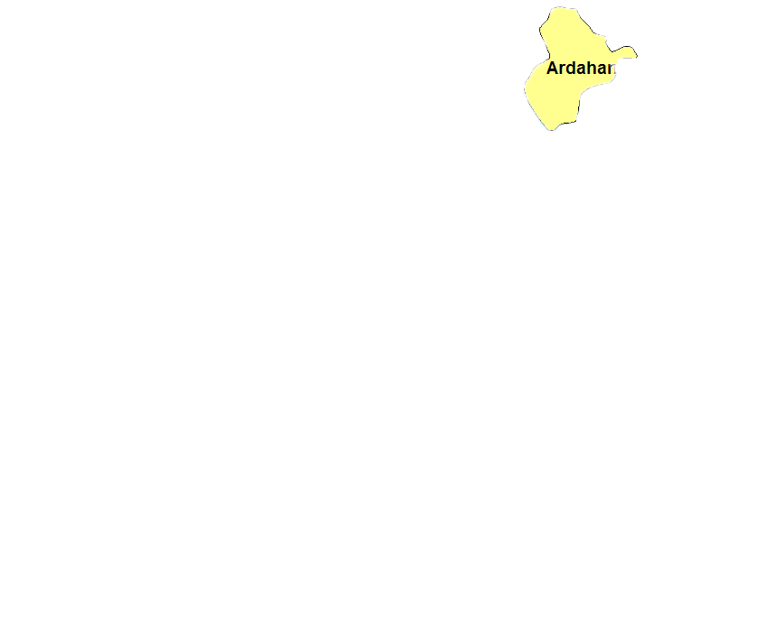

Doğu Anadolu Bölgesi
Coğrafi Konumu
Yurdumuzun doğusunda 164.000 km2 lik bir alanla Türkiye yüz ölçümünün % 21'ini kaplamaktadır. Tüm coğrafi bölgelerimiz arasında yüz ölçümünün büyüklüğü bakımından 1. sırada yer alır. Kuzey-güney yönünde en geniş alan kaplayan bölgemizdir (enlem farkı en fazla).
Yeryüzü Şekilleri
Bölgenin ortalama yükseltisi 2000 - 2200 m arasındadır. Ortalama yükseltisi en fazla olan bölgemizdir. "Türkiye'nin çatısı" olarak isimlendirilir. Bölgenin en alçak yeri olan Iğdır Ovası (850m) dahi İç Anadolu'nun ortalama yükseltisine yakındır. Erzurum Ovası 1800 m , Yüksekova 2200 m yükseltiye sahiptir. Bölgede yer alan ovaların ortalama yükseltisi 1500'dir. Bölgede bulunan dağlar, doğu-batı doğrultusunda ve üç sıra halinde uzanırlar. Dağlar arasında ise çöküntü ovalan yer alır. Bölgenin kuzeyinde, batıdan doğuya doğru Çimen, Kop, Allahuekber ve Yalnızçam Dağları uzanır. Orta sırada Munzur (Mercan) Dağları, Karasu-Aras Dağları ve Ağrı Dağı bulunur. Güneyde yer alan dağlar ise Güneydoğu Toroslar, Bitlis Dağları, Buzul (Cilo) Dağlarıdır. Bu dağlar üçüncü jeolojik zamanda Alp-Himalaya orojenik sisteminin uzantısı olarak kıvrılma sonucu oluşmuştur.
Bölgede Van Gölü'nün kuzeyinde kuzeydoğu-güneybatı yönünde uzanan kırık hattı boyunca Nemrut, Süphan, Tendürek, Ağrı (5137m) volkanik dağları uzanır. Ağrı Dağı Türkiye'nin en yüksek noktasını oluşturur.
Bölgede kıvrım dağları arasında yer alan çöküntü ovaları da doğu - batı yönünde uzanır. Bu ovalardan Elbistan, Malatya, Elazığ, Bingöl, Muş, Van, Yüksekova ve Başkale güneyde, Erzincan, Tercan, Aşkale, Erzurum, Pasinler, Horasan, Kağızman, Iğdır ovaları kuzeyde bulunur.
Bölgede platolar da geniş alan kaplar. Erzurum-Kars platosu Doğu Anadolu'nun en geniş plâtosudur. Bundan başka Fırat ve kolları tarafından parçalanmış plato görünümü kazanmış yüksek yaylalar oldukça fazladır. Bölgedekİ yer şekİllerİnİn başlıca etkİlerİ şöyle sıralanabilir
Yükseltiden dolayı sıcaklık değerleri düşmüştür.Tarım ürünleri düşük sıcaklığın etkisiyle daha geç olgunlaşır. Tarım ürün çeşidi azdır. Bölgede yüzey şekillerine bağlı olarak Kuzey-güney doğrultusunda ulaşım zordur. Ulaşım Doğu-batı yönünde daha kolaydır. Türkiye'de ulaşım ağının en seyrek ve en elverişsiz olduğu bölgedir. Ekilebilen alanlar azalmıştır. Sanayi de gelişmediğinden halk daha çok tarım kesiminde çalışmaktadır.
Dolayısıyla Türkiye'de tarımsal nüfus yoğunluğu en fazla olan bölgemizdir. Hidroelektrik potansiyeli en yüksek akarsular bu bölgemizdedir. Gerçek sıcaklık ile indirgenmiş sıcaklık arasında farkın en fazla olduğu bölgedir. Gerçek yüzölçüm ile izdüşüm yüzölçüm arasında da farkın en fazla olduğu bölgedir. Yerşekilleri ve iklimin olumsuz etkisinden dolayı tarımsal faaliyet gelişmemiştir.
Bölgede birinci ekonomik faaliyet hayvancılıktır. İklim ve Bitki Örtüsü Kış mevsimi uzun ve soğuktur. Sıcaklık -40°C'ye kadar düşer. Yaz mevsimi ise sıcak ve kısadır. Sıcaklık 20°C nin üzerine çıkar. Kış mevsiminde yağışlar genelde kar şeklindedir ve hiç erimeden uzun süre yerde kalır. Yıllık sıcaklık farkı 30°C den fazladır. Bölgenin güneyine ve batısına doğru gidildikçe sıcaklık ortalamaları artar (enlem ve yükseltinin azalmasıdır). Karasallığın etkisiyle en fazla yağış yazın, en az yağış kışın düşer (Erzurum-Kars Bölümünde)Yıllık ortalama 500-600 mm yağış alır.
Buharlaşma az olduğu için bu yağış yeterli olur. Bölge, İç Anadolu'dan daha yüksekte olduğundan daha fazla yağış alır. Kışlar karasallığın etkisiyle daha sert geçer. Doğal bitki örtüsü steptir. Ancak yaz yağışları sebebiyle çayır şeklindedir. Yağışın fazla olduğu dağlık bölgelerde ormanlar vardır. Türkiye orman varlığı bakımından 5. büyük bölgemizdir.
Iğdır Ovası, Doğu Anadolu Bölgesi'nin en az yağış alan yeridir. Buranın yıllık yağış, ortalaması 250 mm'nin altındadır. Buna karşılık Iğdır Ovası, alçakta bulunmasından dolayı kış mevsimi daha ılık geçer. Burda bu sebebten dolayı mikrolima özellik gösterir ve pamuk yetişir.
Akarsuları: Karasu ve Murat birleşerek Fırat Nehrini oluşturur.
Tunceli'de il topraklarından kaynaklanan pek çok suyu Karasu ve Murat Irmakları toplar. Karasu Irmağı kuzeybatısında, Peri Suyu'da güneydoğuda doğal sınır oluşturur. Bu ırmaklar ile il sınırları içerisinde akan Munzur Suyu, Pülümür Çayı ve Tahar Çayı, güneyde Keban Baraj Gölüne dökülür.
Bu nehir Dicle Nehri ve onunla birleşen Büyük Zap Kolu ile yabancı topraklara giderek Basra Körfezinden denize dökülmektedir. Aras ve Kura nehirleri de yine başka topraklara giderek Hazar Denizine dökülmektedir. Bu akarsuların yüzey şekilleri ve engebe nedeniyle hidroelektrik enerji üretme güçleri fazladır.
Gölleri: Van Gölü ülkemizin en büyük gölüdür ve suyu sodalıdır. Bölgenin diğer gölleri şunlardır: Erçek, Nazik, Çıldır, Hazar ( Tektonik Göllerdir), Balık, Haçlı, Nemrut (Krater Gölleri), ve Akgöl.
Ayrıca bölgede Keban ve Karakaya Baraj Gölleri de bulunmaktadır.
Tarım
Bölge yüzölçümünün %10'unda ancak tarım yapılabilir. Yerşekilleri ve iklimin olumsuz etkisinden dolayı tarımsal faaliyet gelişmemiştir. Bölgedeki tarım etkinlikleri en çok bölgenin güneyindeki çöküntü ovalarında (Elbistan, Malatya, Elazığ ve Muş ovaları) yoğunlaşır.
Arpa: En fazla tarımı yapılan üründür.Sebepleri: Düşük sıcaklığa dayanıklı olması, kısa sürede hasat edilebilmesi, hayvan yemi olarak kullanılması ve buğdayın yetiştirilemediği yerlerde yetşebilmesidir.
Buğday: Arpadan sonra en fazla tarımı yapılan ürün buğdaydır.
Tütün: Bitlis, Malatya ve Elazığ çevresinde yetiştirilir.
Pamuk: Iğdır ovasında pamuk yetiştirilir. Kayısı: Malatya, Türkiye ve Dünyada kayısı üretiminde ilk sırada yer alır. Ayrıca patates, lahana gibi çeşitli ürünler de yetiştirilir. Genel olarak sıcaklığın düşük olmasından dolayı sebzecilik gelişmemiştir. Bundan dolayı sebze tarımına en az elverişli bölge Doğu Anadolu'dur.
Hayvancılık
Doğu Anadolu Bölgesi, hayvancılıkta elverişli şartlara sahip olduğu gibi olumsuz şartlar da taşır. Çayır ve otlakların fazla yer kaplaması hayvancılığı teşvik edici, kışların uzun ve sert geçmesi ise sınırlayıcı bir özelliktir. Erzurum-Kars Bölümü'nde yaz yağışları ile oluşan çayırların geniş alan kaplaması büyükbaş hayvancılığın gelişmesini sağlamıştır.
Bölgenin güneyindeki ovalık alanlarda ise küçükbaş hayvanlardan koyun yetiştiriciliği önem kazanmıştır. Dağlık yörelerde ise kıl keçisi yetiştirilmektedir. Canlı hayvan, yapağı, tereyağı ve peynir halkın önemli geçim kaynaklarıdır.
Hakkâri, Kars ve Bitlis'te arıcılık gelişmiştir. Türkiye bal üretiminin %20'sini Doğu Anadolu Bölgesi verir.
Yeraltı Zenginlikleri
Türkiye'de maden çeşitliliği ve rezervinin (miktar) en fazla olduğu bölge, Doğu Anadolu Bölgesi ve özellikle Yukarı Fırat Bölümü'dür.
Demir: Türkiye'de çıkarılan demirin %35'ten fazlası bu bölgede Divriği (Sivas), Hekimhan ve Hasançelebi (Malatya)'de çıkarılır.
Krom : Türkiye'deki kromun %33'ü bu bölgeden çıkarılır. Ergani, Guleman ve Maden önemli krom yataklarının bulunduğu merkezlerdir.
Bakır : Türkiye'deki bakırın önemli bir kısmı bölgeden çıkarılır. Maden, Ergani ve Pütürge'de bakır yatakları vardır.
Kurşun-Çinko : Kurşunun %90'ı, çinkonun %75'i Keban'da çıkarılır. Bu madenler Keban'da "Simli Kurşun İşletmeleri'nde" işlenir. Ancak son yıllarda üretim durma aşamasına gelmiştir.
Linyit : Elbistan, İspir ve Erzurum çevresinde çıkarılır. Türkiye'deki linyit üretiminin %10'u bu bölgeden elde edilir. Afşin - Elbistan termik santralinde enerjiye dönüştürülür.
Oltu Taşı : Erzurum'un Oltu ilçesinde çıkarılır. Türkiye ve Dünya üretiminde bölge birinci sıradadır. Asbest: Erzincan çevresinde çıkarılır.
Barit: Muş ve çevresinde çıkarılır. Kalay : Elazığ ve çevresinde çıkarılır.
Kaya tuzu : Kağızman, Narman ve Kars çevresinde kaya tuzu yatakları bulunmakta ve bu yataklardan tuz elde edilmektedir.
Sanayi
Doğal koşulların olumsuz etkisinin yaşandığı Doğu Anadolu Bölgesi'nde endüstri yeterince gelişmemiştir. Sanayi bakımından en geri kalmış bölgedir. Sanayi kuruluşları yetersiz olduğu için, bölge halkı geçimini daha çok tarım ve hayvancılıktan temin eder. Bölgede bulunan kuruluşlar daha çok tarıma dayalıdır. Maden çıkarımı bakımından zengin olsa da madenlerin işletilmesi azdır. Doğu Anadolu Bölgesi, maden varlığı ve elektrik enerjisi üretimi ile Türkiye sanayisinin gelişmesine büyük katkıda bulunmaktadır. Yalnızca Keban Barajı Türkiye'de üretilen elektrik enerjisinin yaklaşık % 25'ini sağlamaktadır
Hidroelektrik üretiminde ön plandadır.
Bölgedeki endüstri kuruluşları şunlardır: Et Kombinaları: Malatya, Elazığ, Erzurum, Ağrı ve Van'da bulunur. Et üretiminin %25'i bu bölgeden karşılanır. Şeker Fabrikaları : Malatya, Elazığ, Van, Erzurum, Muş ve Erzincan'dadır. Dokuma ve İplik Fabrikaları : Daha çok pamuklu dokuma gelişmiştir. Malatya ve Erzincan'daki fabrikalarda pamuk işlenir. Sigara Fabrikaları: Malatya ve Bitlis'te kurulmuştur. Çimento Fabrikaları : Elazığ, Erzurum, Kars ve Van'da kurulmuştur.
Turizm
Doğu Anadolu'da bulunan, Ağrı Dağı, Van Gölü, Nemrut Dağı, Süphan Dağlan, Sat Dağları, Mercan Vadisi Milli Parkı turistlerin ilgisini çeken doğal güzelliklerdir. Bölgede dağcılık ve kış sporları için çok uygun ortamlar vardır. Palandöken Dağları'nda, Bingöl'de ve Sarıkamış'ta dağ sporları tesisleri bulunmaktadır.
Bölgedeki göller, doğal güzellikleriyle birer gezi ve eğlence yerleridir. Bazı göllerin kıyısında da kamplar ve plaj tesisleri vardır.
Doğubeyazıt yakınlarındaki İshak paşa Sarayı da önemli turizm alanlarından birisidir. Erzurum ve Diyadin'de bulunan kaplıcalar sağlık turizmi için önemlidir.
Nüfus ve Yerleşme
Yüz ölçümü en geniş olan bu bölgemizde yer şekilleri ve iklimin de etkisi ile nüfus azdır. Nüfus bölgede daha çok çöküntü hendekleri içindeki ovalarda toplanmıştır. Toplu yerleşme tipi görülür. Nüfus yoğunluğu, Türkiye nüfus yoğunluğunun altındadır. 1997 yılı nüfus sayımına göre, Türkiye nüfus yoğunlu km2 ye 81 kişi iken, bölgede 36 kişidir.
Bölgede şehirleşme oranı çok düşüktür (%28). Kırsal nüfus oranı ise çok fazladır (%72). Karadeniz Bölgesi'nden sonra kırsal nüfus oranı en fazla olan bölge Doğu Anadolu Bölgesi'dir. Bölgede nüfusun %80'i tarım ve hayvancılık ile uğraşır. Sanayi gelişmediği için diğer bölgelere Karadeniz'den sonra en çok göç gönderen bölgemizdir. Nüfus yoğunluğu bakımından son sırada yer alır.
İklimin sert karasal etkisi ve yer şekillerinin engebeli olması nedeniyle, tarımsal nüfus yoğunluğu fazladır. Bölgenin bazı yerlerinde tarımsal nüfus yoğunluğu 500'e kadar çıkmaktadır.Erzurum, Elazığ ve Malatya bölgenin büyük yerleşim birimleridir.
Dahası için Wiki